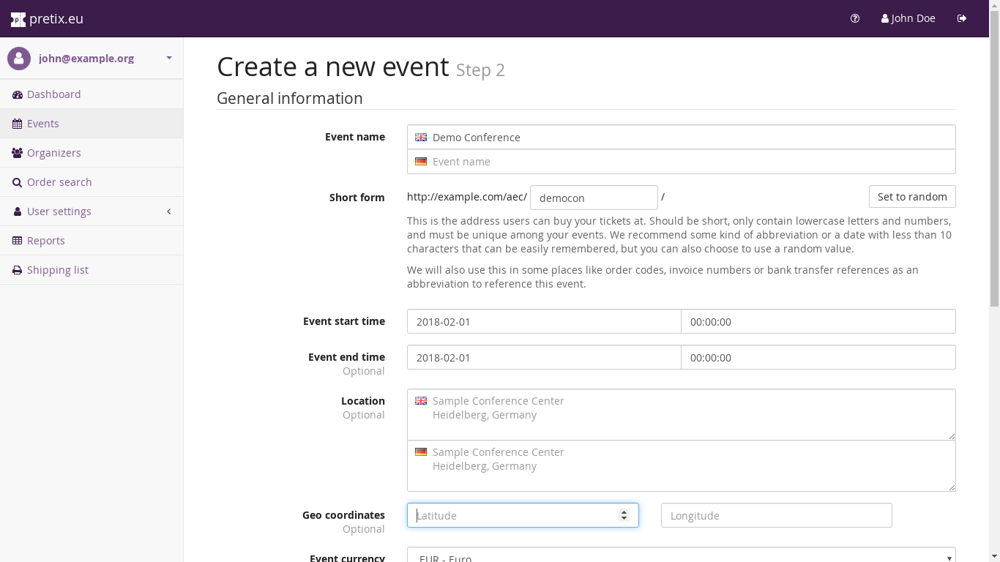
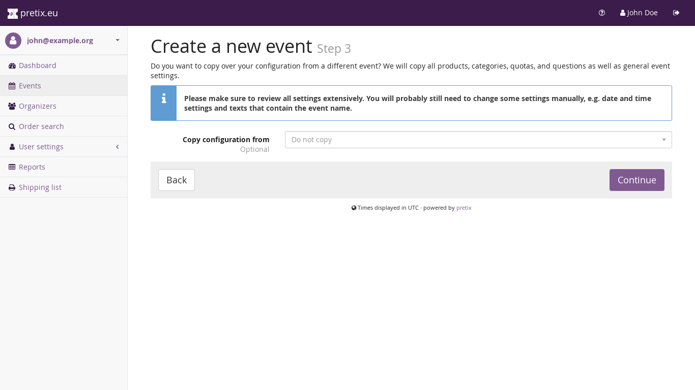
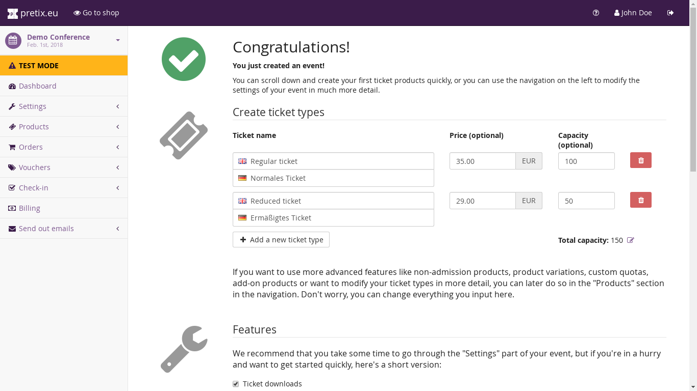

Creating an event¶
After you have created an organizer account, the next step is to create your event. An event is the basic object in eventyay that everything is organized around. One event corresponds to one ticket shop with all its products, quotas, orders and settings.
To create an event, you can click the “Create a new event” tile on your dashboard or the button above the list of events. You will then be presented with the first step of event creation:

Here, you first need to decide for the organizer the event belongs to. You will not be able to change this association later. This will determine default settings for the event, as well as access control to the event’s settings.
Second, you need to select the languages that the ticket shop should be available in. You can change this setting later, but if you select it correctly now, it will automatically ask you for all descriptions in the respective languages starting from the next step.
Last on this page, you can decide if this event represents an event series. In this cases, the event will turn into multiple events included in once, meaning that you will get one combined ticket shop for multiple actual events. This is useful if you have a large number of events that are very similar to each other and that should be sold together (i.e. users should be able to buy tickets for multiple events at the same time). Those single events can differ in available products, quotas, prices and some meta information, but most settings need to be the same for all of them. We recommend to use this feature only if you really know that you need it and if you really run a lot of events, not if you run e.g. a yearly conference. You can read more on this feature here.
Once you set these values, you can proceed to the next step:
{kind=link}
In this step, you will be asked more detailed questions about your event. In particular, you can fill in the following fields:
- Name
This is the public name of your event. It should be descriptive and tell both you and the user which event you are dealing with, but should still be concise. You probably know how your event is named already ;)
- Short form
This will be used in multiple places. For example, the URL of your ticket shop will include this short form of your event name, but it will also be the default prefix e.g. for invoice numbers. We recommend to use some natural abbreviation of your event name, maybe together with a date, of no more than 10 characters. This is the only value on this page that can’t be changed later.
- Event start time
The date and time that your event starts at. You can later configure settings to hide the time, if you don’t want to show that.
- Event end time
The date and time your event ends at. You can later configure settings to hide this value completely – or you can just leave it empty. It’s optional!
- Location
This is the location of your event in a human-readable format. We will show this on the ticket shop frontpage, but it might also be used e.g. in Wallet tickets.
- Event currency
This is the currency all prices and payments in your shop will be handled in.
- Sales tax rate
If you need to pay a form of sales tax (also known as VAT in many countries) on your products, you can set a tax rate in percent here that will be used as a default later. After creating your event, you can also create multiple tax rates or fine-tune the tax settings.
- Default language
If you selected multiple supported languages in the previous step, you can now decide which one should be displayed by default.
- Start of presale
If you set this date, no ticket will be sold before this date. We normally recommend not to set this date during event creation because it will make testing your shop harder.
- End of presale
If you set this date, no ticket will be sold after this date.
If all of this is set, you can proceed to the next step. If this is your first event, there will not be a next step and you are done! If you have already created events before, you will be asked if you want to copy settings from one of them:
{kind=link}
If you do so, all products, categories, quotas and most settings of the other event will be taken over. You should still review them if they make sense for your new event, but it could save you a lot of work. After this step, your event is created successfully:
{kind=link}
You can now fine-tune all settings to your liking, publish your event and start selling tickets!